Same comparison, two datasets
Innexin panel: 164 proteins in 28 species. Connexin panel: 127 proteins in 38 species. The innexin story is discovery-heavy; the connexin story is carried by the vertebrate reference panel.
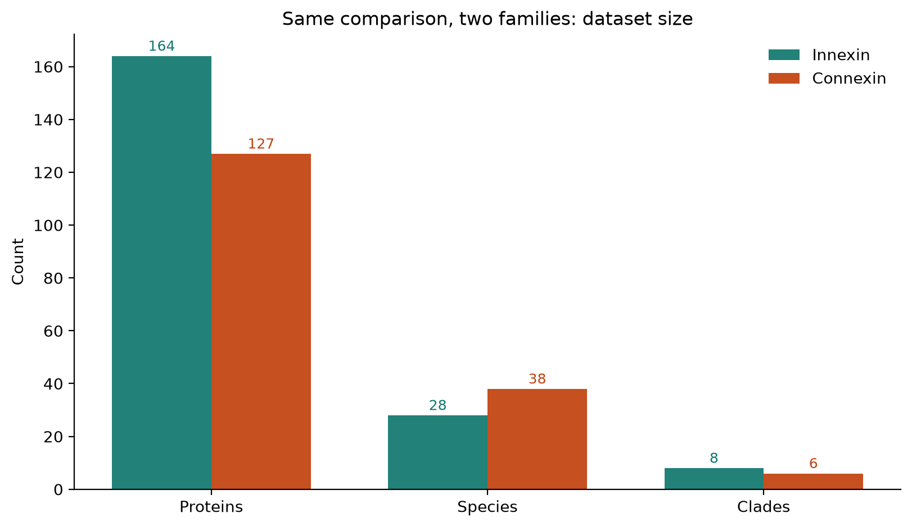
Innexin vs Connexin
Clade geography, within/between identity, embeddings, length, exons and synteny logic — one frame for both gap-junction families.
Both families encode gap junctions. Cross-family MMseqs and embeddings in this panel treat them as separate sequence clouds, consistent with literature that places them in different channel families (not proof of absence of deep homology). Innexins diversified by clade-specific duplication with misleading gene names (within ~46% vs between ~28%; SF3↔SF4 ~28%). Connexins diversified inside vertebrates as named α/β/γ/δ classes that stay closer (within ~57% vs between ~40%; α↔β ~46%) and keep two conserved genomic addresses (GJA4 in the β-cluster, GJA1 elsewhere).
Innexin panel: 164 proteins in 28 species. Connexin panel: 127 proteins in 38 species. The innexin story is discovery-heavy; the connexin story is carried by the vertebrate reference panel.

Innexin recoveries outside insects pile into SF3 / nematode-like labels. Connexin α and β co-occur across mammals, birds, amphibians and fish — the canonical vertebrate gap-junction radiation in this panel, not a name-chaos problem.
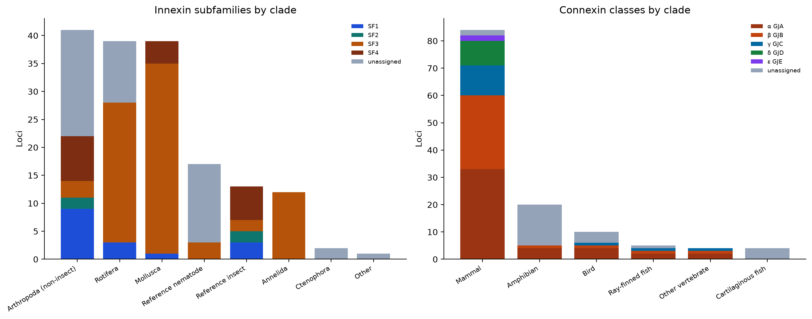
Identical metric. Innexins: ~46% within vs ~28% between. Connexins stay closer: ~57% vs ~40%. Both are still one family internally; connexin paralogs diverged less.
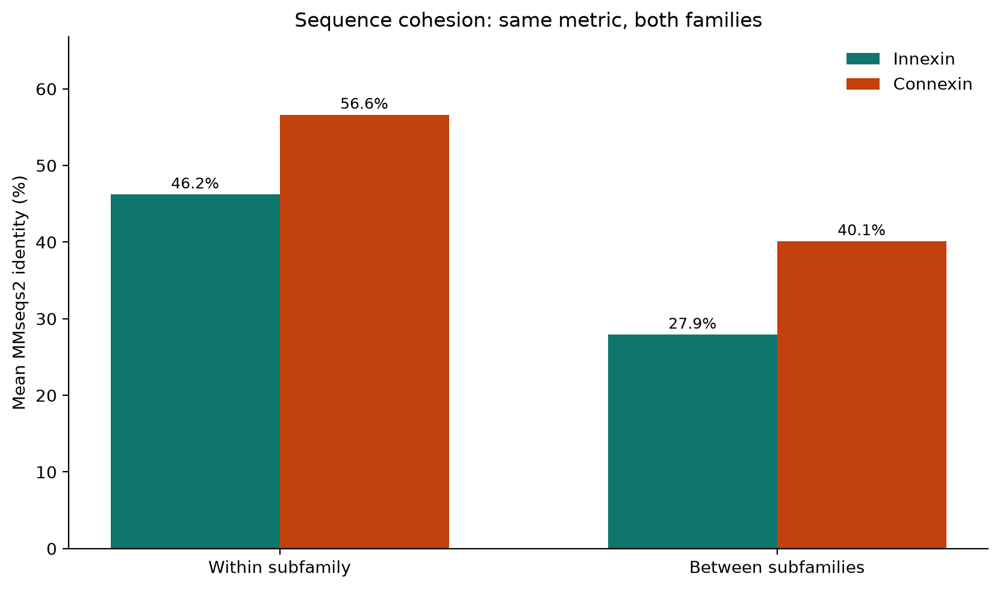
Read the off-diagonals. Innexin SF3 vs SF4 is the cold cell (~28%). Connexin α vs β is still warm (~46%) — distinct classes, younger split.
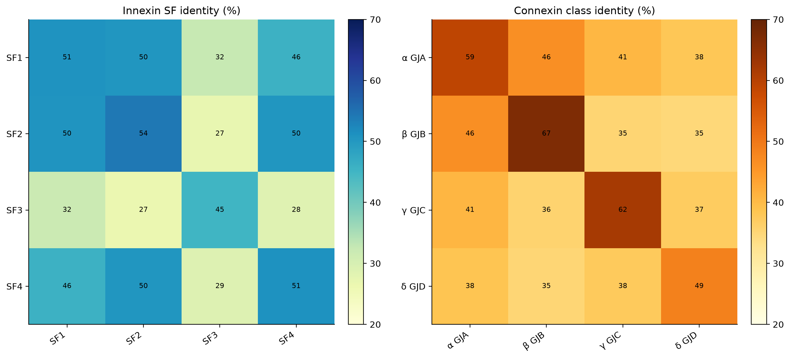
SF3↔SF4 is two evolutionary experiments inside innexins (insect expansion vs nematode-like radiation). α↔β is a conserved vertebrate paralog split. Same plot type; different depths of divergence.
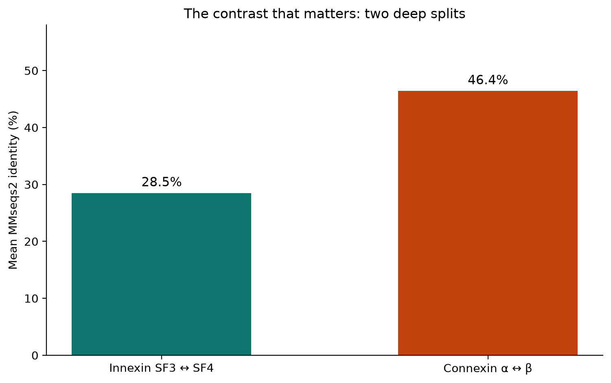
Local motif grammar separates groups even when amino-acid composition does not. Innexin same vs different: 0.28 vs 0.05. Connexin: 0.49 vs -0.05.
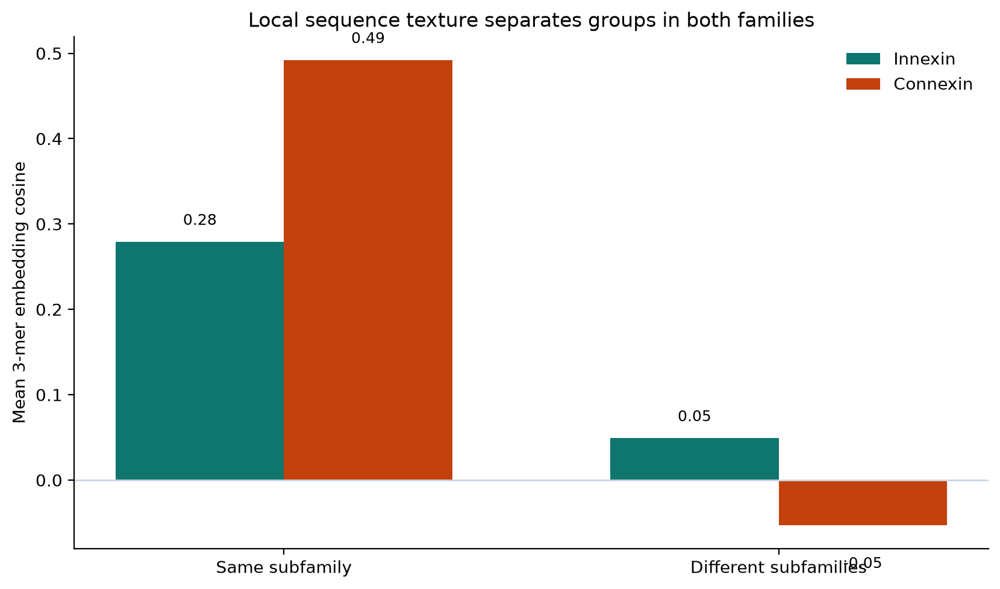
Connexin named classes stay pure even at high identity (recent, well-separated paralogs). Innexin subfamilies peak around 40% identity — older, more mixed expansions.
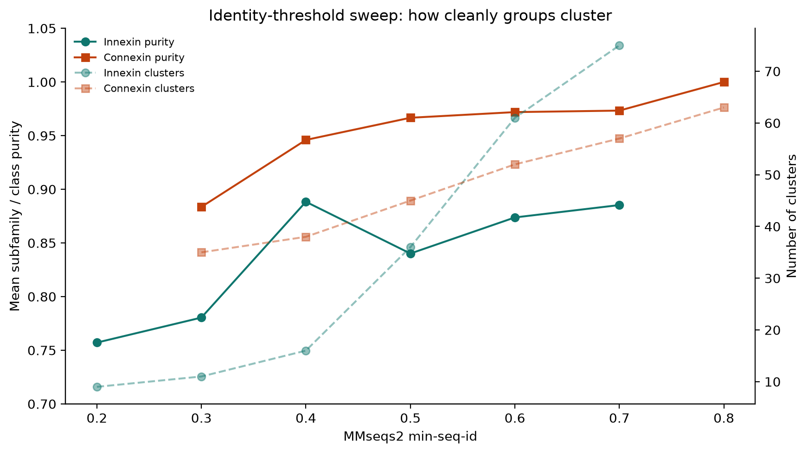
Innexins sit longer (~350–420 aa). Connexins are compact (~250–380 aa). Length is conserved more tightly than sequence identity inside each family.
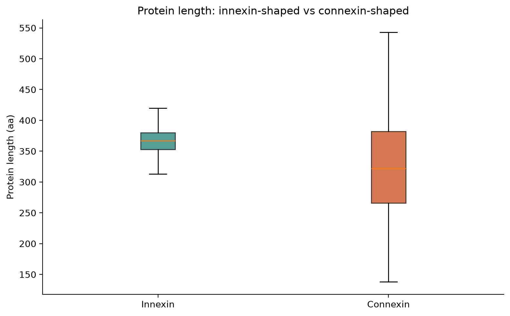
Reference gene models: innexin exon counts vary by lineage; connexins stay compact (often ~2 exons). Architecture is a family character, not a shared ancestral gene model.
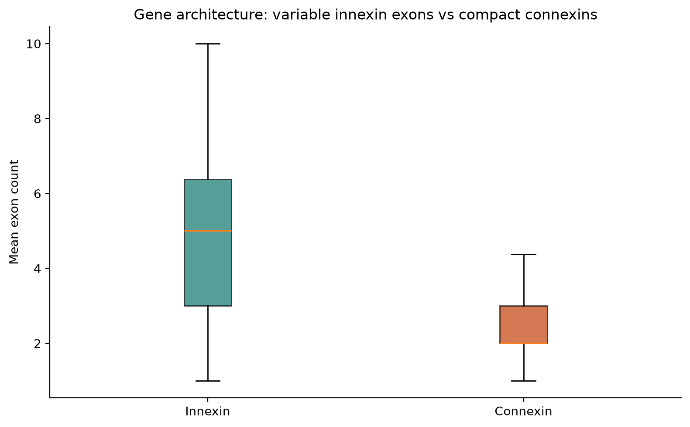
Innexin curator recoveries (rotifers, molluscs, non-insect arthropods) carry the phylogenetic argument. Connexin discovery is sparse; α/β/γ/δ structure is already in the reference vertebrates.
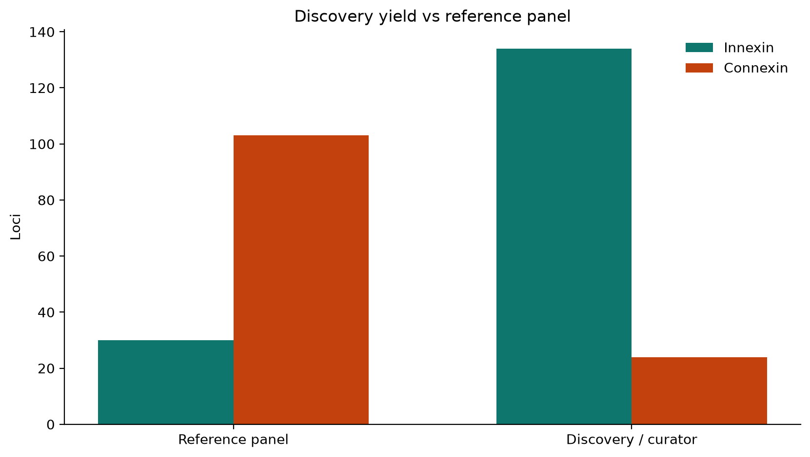
Sensitive MMseqs finds 189 short fragment hits (median length 28 aa), but 0 alignment(s) at e≤1e-3 and ≥80 aa. Zero long hits supports extreme divergence or separate families — not by itself proof of absence of homology. Same biological job; analyse sequence and synteny in parallel, not as one alignment.
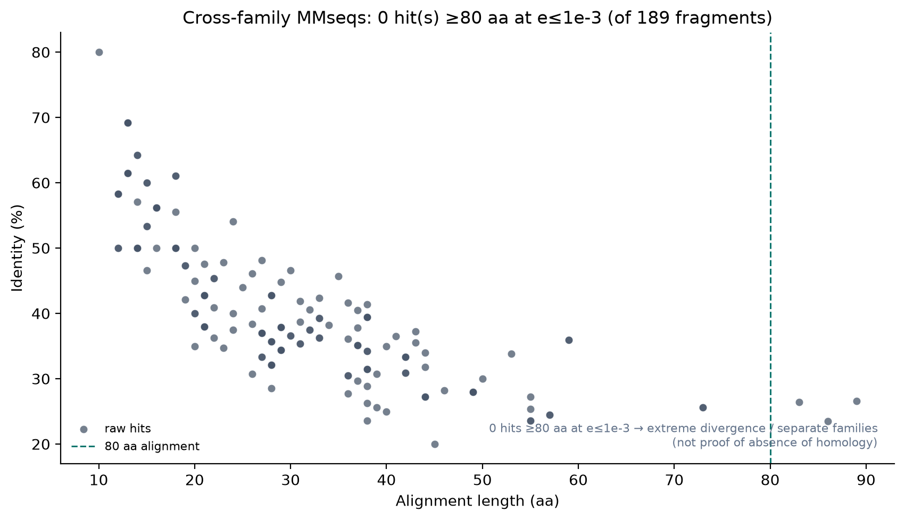
Innexin: Drosophila tandem clusters cut across the tree (Inx7 is next to ogre/Inx2 but phylogenetically with nematodes). Connexin: GJA4 stays in a conserved β-cluster; GJA1 is a second locus already present in Xenopus.
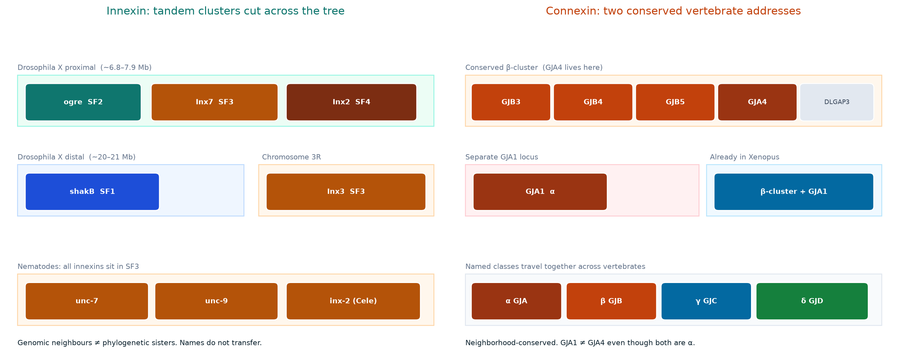
Innexins and connexins fill a similar biological niche with distinct sequence and genomic characters in this panel: innexins split into tree subfamilies whose proteins and names come apart across phyla, while connexins keep α/β classes sequence-close and synteny-stable across vertebrates.